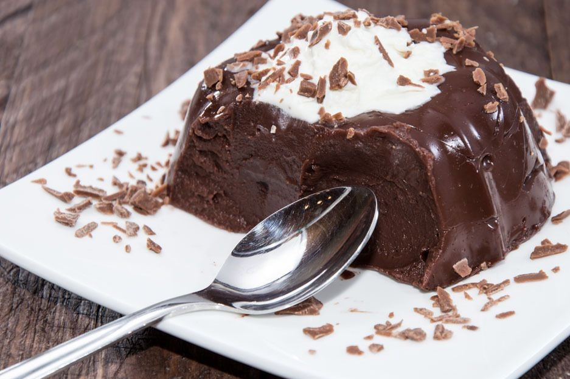
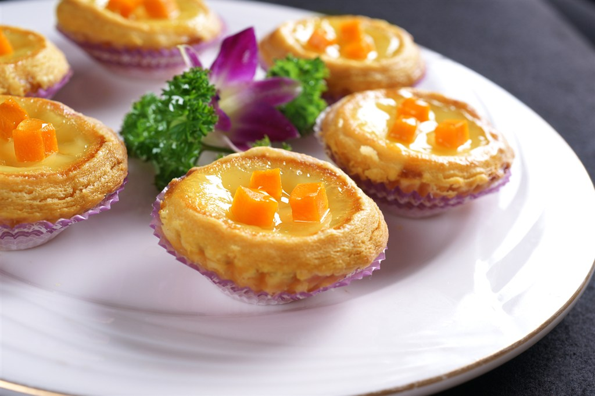

<!--
  Generated template for the ZanPage page.

  See http://ionicframework.com/docs/components/#navigation for more info on
  Ionic pages and navigation.
-->
<ion-header>

  <ion-navbar text-center>
    <ion-title >赞</ion-title>
  </ion-navbar>
  <ion-toolbar>
    <ion-segment [(ngModel)]="good">
       <ion-segment-button value="a">
        我赞过的
       </ion-segment-button>
       <ion-segment-button value="b">
        赞过我的
       </ion-segment-button>
    </ion-segment>
  </ion-toolbar> 
</ion-header>


<ion-content padding>
    <div [ngSwitch]="good">
       <ion-list *ngSwitchCase="'a'">
           <div class="zan1">
                 
                 <div class="dianzan1">
                     <span>
                        <button><ion-icon name="heart"></ion-icon></button>
                     </span>
                     <span><p>333</p></span>
                 </div>
           </div>
           <div class="box">
                <div class="zan2">
                    
                    <div class="dianzan2">
                        <span><button><ion-icon name="heart"></ion-icon></button></span>
                        <span><p>333</p></span>
                    </div>      
                </div>
           </div>
           <div class="box1">
                <div class="zan3">
                     
                     <div class="dianzan3">
                         <span><button><ion-icon name="heart"></ion-icon></button></span>
                         <span><p>333</p></span>
                     </div>
                </div>
                <div class="zan3">
                      
                      <div class="dianzan3">
                        <span><button><ion-icon name="heart"></ion-icon></button></span>
                        <span><p>333</p></span>
                      </div>
                </div>
           </div>
       </ion-list>
       <ion-list *ngSwitchCase="'b'">
           <ion-item>
            
           </ion-item>
       </ion-list>
    </div>
</ion-content>
